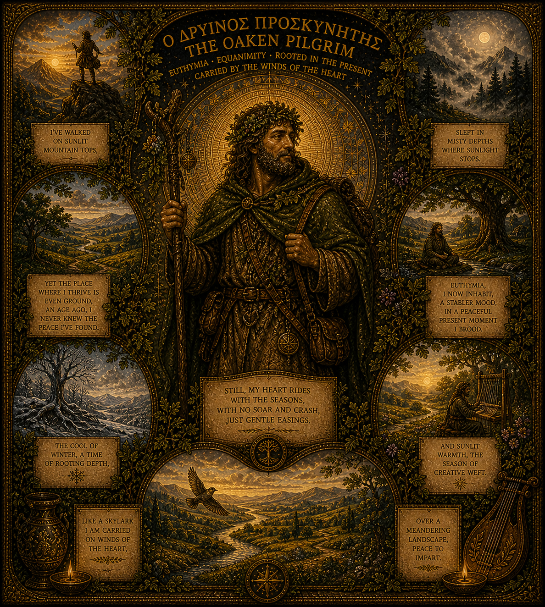

Oaken Pilgrim
Rooted in the Present, Carried by the Winds of the Heart
Key Inscriptions
Still my heart rides with the seasons, with no soar and crash, just gentle easings.
— Image inscription
Like a skylark I am carried on winds of the heart.
— Image inscription
Euthymia: a stable mood, a practised present moment.
— Image inscription
Rooted in the present. Carried by the winds of the heart.
— Image inscription
Archetypal Function
The Oaken Pilgrim is the integrating figure of this constellation — the one formed by all the others, the one whose presence makes the pantheon a coherent inner ecology rather than a collection of independent archetypes. He is not a god borrowed from tradition but a figure that emerged from the inner work itself, grown from the landscape of this specific life. He holds the euthymia of the Stoics: not the suppression of feeling but its seasoning — a stable equanimity that has been cultivated rather than inherited.
He is the figure who makes this entire project possible. Without Chiron's wound, he would not have the depth. Without Hermes-Thoth's interpretive gift, he could not write it. Without Isis-Sophia's grounding, he would not trust it. Without Apollo's clarity, he could not articulate it. He is the Oaken Pilgrim because he carries all of these without being any of them — he is the pilgrim-self that walks through the constellation rather than being any one of its figures.
The Shadow Forms
The shadow of the Oaken Pilgrim is the wanderer who never arrives — the perpetual pilgrim who mistakes movement for integration, who uses the journey as a way of avoiding the settlement that integration requires. The staff that never rests, the equanimity that is actually detachment, the stability that is actually rootlessness given a spiritual name.
There is also the shadow of the self-appointed sage: the one who has accumulated enough inner work to feel superior to those who have not begun it, who mistakes depth for distance, who uses the language of integration to maintain a subtle separateness. The Oaken Pilgrim's shadow is the pilgrim who has stopped being moved by the landscape because he has become too certain of the map.
Integration
The Oaken Pilgrim integrated is the figure who can sit down. Who knows when the pilgrimage has brought him somewhere real and allows himself to rest there — not permanently, but fully. Who can be in the present moment without performing it, who allows the lyre to be silent without anxiety, who carries the crown without claiming it.
He is the goal of this project and its guardian. He is the figure who gives the project its name and its tone: personal, unhurried, honest, rooted. Everything written here is written in his voice, because he is the voice that this inner work has been building toward. The Oaken Pilgrim is not a figure to aspire to become — he is the figure most fully present when the work is going well.
Symbolic Vocabulary
Oak Staff
The pilgrim's companion and instrument of grounding — wood from the oldest tree, carried on foot through all terrains. The staff is the anchor that makes movement possible without loss of centre.
Compass Rose
Orientation without destination: the pilgrim does not march toward a fixed point but maintains direction without rigidity. The compass rose knows all bearings; it commits to none until the ground makes its claim.
Oak Leaf Crown
The crown of the uncrowned — authority that was not conferred by institution but grown slowly, as the oak grows. The Oaken Pilgrim's crown is not given; it accrues through the practice of presence over years.
Lyre
The instrument the pilgrim carries not for performance but for availability. The lyre belongs to the landscape as much as to the player — the songs come from the walk, not the stage.
Within the Constellation
Most closely related to: